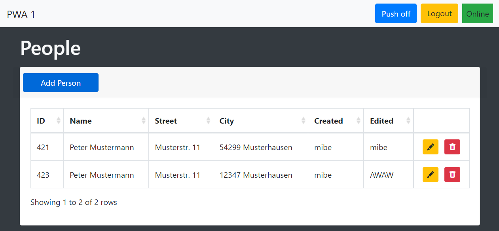

PWA Ausführung 1
Die erste Ausführung von Progressive Web Apps soll installierbar sein, eine offline- Fallbackpage beinhalten und die Push-Benachrichtigungs-API verwenden können. Damit eine PWA installierbar ist, sind mehrere Kriterien zu erfüllen:- Die PWA darf noch nicht installiert sein
- Die PWA muss über HTTPS gesichert sein
- Die PWA muss ein Web-App-Manifest enthalten
- Die PWA enthält einen ServiceWorker mit fetch-Event-Handler
- Die PWA erfüllt eine User-Engagement-Heuristik
Die Sicherung über HTTPS und der Fakt, dass die PWA noch nicht installiert sein darf sind bereits gegeben. Nun fehlt als Mindestanforderung nur noch das Web-App-Manifest und der ServiceWorker. Die User-Engagement-Heuristic beschreibt, dass die Webseite erst für eine bestimmte Zeit vom Nutzer besucht sein muss, bis die Aufforderung zum Installieren auftaucht. Das geschieht meist nach wenigen Sekunden. 